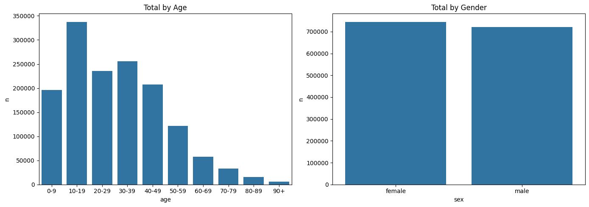
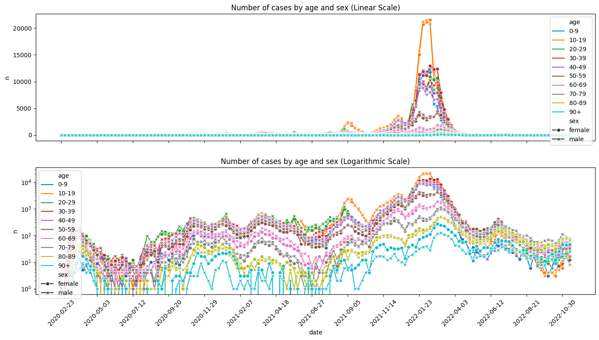
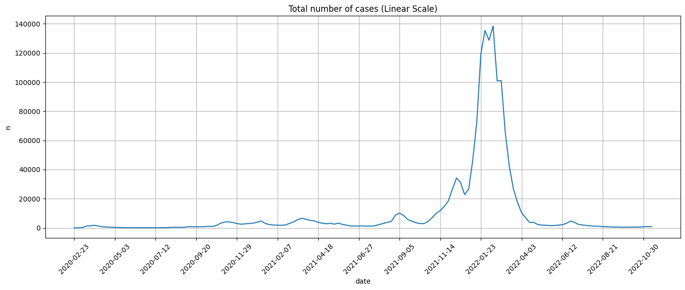
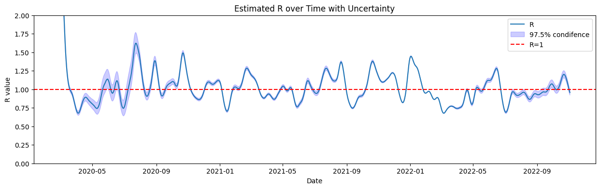
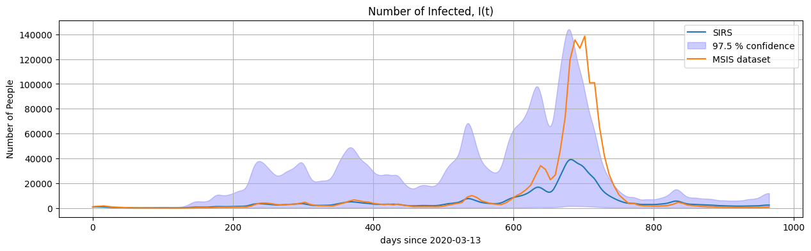

COVID-19 in Norway: A Case Study#
Norwegian Institute of Public Health (FolkeHelseInstituttet) has published Norwegian surveillance data in a format that is easily accessible from a machine-reading perspective.
🔗 Surveillance Data Repository ⚠️ The repository is now archived (set to read-only)
In this chapter, we use real COVID-19 data from the Norwegian Institute of Public Health (FHI) to explore disease spread and estimate the reproduction number \(\mathcal{R}(t).\)
We then use these estimates in a SIRS compartmental model to simulate the epidemic under different scenarios.
1. Load Python packages#
We begin by importing the necessary Python packages and ensuring required libraries are installed.
# --- Core packages ---
import pandas as pd
import numpy as np
import matplotlib.pyplot as plt
import seaborn as sns
from scipy.integrate import odeint
import requests
# --- Install optional packages if missing ---
try:
from epyestim import covid19
except ImportError:
!pip install epyestim pymc --quiet
from epyestim import covid19
2. Load data from MSIS (Norwegian Institute of Public Health)#
We use the dataset data_covid19_msis_by_time_sex_age_latest.csv, which includes weekly COVID-19 case counts in Norway by age and sex.
A short description of the data is in _DOCUMENTATION_data_covid19_msis_by_time_sex_age.txt can be also viewed for context.
url_msis="https://github.com/folkehelseinstituttet/surveillance_data/raw/master/covid19/data_covid19_msis_by_time_sex_age_latest.csv"
msis = pd.read_csv(url_msis) # Read the CSV file into a DataFrame
msis['date']=pd.to_datetime(msis.date) # convert date to datetime
doc_url = "https://raw.githubusercontent.com/folkehelseinstituttet/surveillance_data/master/covid19/_DOCUMENTATION_data_covid19_msis_by_time_sex_age.txt"
response = requests.get(doc_url) # Get the documentation
documentation_text = response.text #Save the content as text
# To display the content, uncomment the line below
#print(documentation_text) # Print or display the content
msis.head() # Print the first few rows of the DataFrame
| granularity_time | granularity_geo | location_code | border | age | sex | year | week | yrwk | season | x | date | n | date_of_publishing | |
|---|---|---|---|---|---|---|---|---|---|---|---|---|---|---|
| 0 | week | nation | norge | 2020 | 0-9 | female | 2020 | 8 | 2020-08 | 2019/2020 | 31.0 | 2020-02-23 | 0 | 2022-11-14 |
| 1 | week | nation | norge | 2020 | 0-9 | male | 2020 | 8 | 2020-08 | 2019/2020 | 31.0 | 2020-02-23 | 0 | 2022-11-14 |
| 2 | week | nation | norge | 2020 | 10-19 | female | 2020 | 8 | 2020-08 | 2019/2020 | 31.0 | 2020-02-23 | 0 | 2022-11-14 |
| 3 | week | nation | norge | 2020 | 10-19 | male | 2020 | 8 | 2020-08 | 2019/2020 | 31.0 | 2020-02-23 | 0 | 2022-11-14 |
| 4 | week | nation | norge | 2020 | 20-29 | female | 2020 | 8 | 2020-08 | 2019/2020 | 31.0 | 2020-02-23 | 1 | 2022-11-14 |
3. Explore the data#
3.1. Summorize the data by age and sex#
fig, ax = plt.subplots(1, 2, figsize=(14, 5))
sns.barplot(data=msis.groupby('age')['n'].sum().reset_index(), x='age', y='n', ax=ax[0])
sns.barplot(data=msis.groupby('sex')['n'].sum().reset_index(), x='sex', y='n', ax=ax[1])
ax[0].set_title("Total by Age"); ax[1].set_title("Total by Gender")
plt.tight_layout()
plt.show()

3.2. Visualize time series#
We visualize case counts by age and sex on linear and logarithmic scales.
# Create the subplots with shared x-axis
fig, ax = plt.subplots(2, 1, figsize=(14, 8), sharex=True)
# First subplot: Linear scale
sns.lineplot(
data=msis,
x='date',
y='n',
hue='age',
style='sex',
markers=True,
dashes=False,
ax=ax[0]
)
ax[0].set_title('Number of cases by age and sex (Linear Scale)')
# Second subplot: Logarithmic scale
sns.lineplot(
data=msis,
x='date',
y='n',
hue='age',
style='sex',
markers=True,
dashes=False,
ax=ax[1]
)
ax[1].set_yscale('log') # Set y-axis to log scale
ax[1].set_title('Number of cases by age and sex (Logarithmic Scale)')
# Rotate x-axis tick labels for better readability
plt.xticks(rotation=45)
# Reduce the number of x-axis ticks by showing every Nth tick
N = 10 # Adjust N as needed
xticks = msis['date'].unique()[::N]
ax[1].set_xticks(xticks)
# Adjust layout to prevent overlap
plt.tight_layout()
# Display the plot
plt.show()

3.3. Aggregate all the cases#
Next, we combine all the data to calculte all cases across age and gender:
# Group by date and sum the cases
weekly_cases = msis.groupby('date', as_index=False)['n'].sum().set_index('date')
weekly_cases.head()
| n | |
|---|---|
| date | |
| 2020-02-23 | 1 |
| 2020-03-01 | 30 |
| 2020-03-08 | 217 |
| 2020-03-15 | 1215 |
| 2020-03-22 | 1438 |
fig, ax = plt.subplots(figsize=(14, 6))
sns.lineplot(
data=weekly_cases,
x=weekly_cases.index,
y='n',
ax=ax
)
ax.set_title('Total number of cases (Linear Scale)')
# Rotate x-axis tick labels for better readability
plt.xticks(rotation=45)
# Reduce the number of x-axis ticks by showing every Nth tick
N = 10 # Adjust N as needed
xticks = weekly_cases.index[::N]
ax.set_xticks(xticks)
ax.grid(True) # Add grid to the first subplot
# Adjust layout to prevent overlap
plt.tight_layout()
# Display the plot
plt.show()

5. Estimate Reproduction Number \(R(t)\)#
We estimate the effective reproduction number \(\mathcal{R}(t)\) using the Python package epyestim, which is based on Bayesian inference for time-varying reproduction numbers.
The method uses:
A smoothed time series of daily incidence data
A serial interval distribution (i.e., time between successive cases)
A delay distribution between infection and case reporting
epyestim accounts for uncertainty and returns quantiles (e.g., 2.5%, 97.5%) as well as the posterior mean of \(\mathcal{R}(t)\).
These estimates are crucial for evaluating when transmission is increasing (\(R(t) > 1\)) or under control (\(R(t) < 1\)).
We apply it to the interpolated case data from MSIS.
import epyestim.covid19 as covid19
daily_cases = weekly_cases.resample('D').interpolate(method='linear') #interolate data to daily cases
r_estimates = covid19.r_covid(daily_cases['n'])
r_estimates.head()
| cases | R_mean | R_var | Q0.025 | Q0.5 | Q0.975 | |
|---|---|---|---|---|---|---|
| 2020-02-28 | 21.0 | 4.852091 | 0.035857 | 4.486573 | 4.849615 | 5.231146 |
| 2020-02-29 | 25.0 | 3.409442 | 0.014790 | 3.175703 | 3.407999 | 3.651504 |
| 2020-03-01 | 30.0 | 2.632046 | 0.007420 | 2.465315 | 2.631087 | 2.803539 |
| 2020-03-02 | 56.0 | 2.299896 | 0.004671 | 2.168185 | 2.299228 | 2.435981 |
| 2020-03-03 | 83.0 | 2.236439 | 0.003513 | 2.122974 | 2.235927 | 2.353221 |
We can now plot the obtained estimated \(R(t)\) the \(97.5\%\) confidence interval of the estimate.
# Plot the R estimates with uncertainty
fig, ax = plt.subplots(figsize=(15, 4))
sns.lineplot(data=r_estimates, x=r_estimates.index, y='R_mean', ax=ax, label='R')
ax.fill_between(r_estimates.index, r_estimates['Q0.025'], r_estimates['Q0.975'], color='b', alpha=0.2, label='97.5% condifence')
ax.axhline(y=1, color='r', linestyle='--', label='R=1')
ax.set_xlabel('Date')
ax.set_ylabel('R value')
ax.set_title('Estimated R over Time with Uncertainty')
# uncomment the following lines to set x-axis limits
#start_date, end_date= pd.to_datetime('2020-04-01'), pd.to_datetime('2020-09-01')
#ax.set_xlim(start_date, end_date)
ax.set_ylim(0, 2)
ax.legend()
plt.show()

6. SIRS Model with Time-Varying Reproduction Number \(\mathcal{R}(t)\)#
In this section, we define and solve a SIRS model where the effective reproduction number \(\mathcal{R}(t)\) varies with time, based on the estimate above.
Model Overview#
The model follows the classic SIRS dynamics with compartments:
\(S(t)\): susceptible individuals
\(I(t)\): infected individuals
\(R(t)\): recovered (and temporarily immune) individuals
We incorporate \(\mathcal{R}(t)\) directly into the model using a time-dependent transmission rate:
This requires interpolating \(\mathcal{R}(t)\) values at arbitrary time points using the R_interp function.
Model Equations#
Parameters#
Symbol |
Meaning |
Value |
|---|---|---|
\(\gamma\) |
Recovery rate |
\(1/7\) (1 infection lasts ~7 days) |
\(\eta\) |
Loss of immunity rate |
\(1/30\) (immunity lasts ~30 days) |
\(N\) |
Total population |
5,400,000 |
\(\mathcal{R}(t)\) |
Time-varying reproduction number |
Estimated from data |
\(I_0\) |
Initial infected individuals |
From case data on the first date |
\(S_0, R_0\) |
Initial susceptible/recovered |
Computed from \(N\) and \(I_0\) |
Initial Setup#
We define:
R_interp(t, Rt, key): interpolates the \(R(t)\) values for continuous timederiv(...): defines the SIRS differential equations with \(\beta(t)\)Time grid \(t\): in days since the start (can be selected within the range of estimated \(\mathcal{R}(t)\))
This setup is then passed to the odeint solver to simulate the SIRS model.
def R_interp(t, Rt, key):
"""
Interpolates the R values for the given time points.
str ='R_mean' or 'Q0.975' or 'Q0.025'
t: Time points for interpolation, in days since the start date refereced to in Rt.index[0]
"""
days =(Rt.index - Rt.index[0]).days
R_values = np.interp(t, days, Rt[key])
return R_values
def deriv(X, t, N, gamma, eta, Rt, key ='R_mean'):
"""
Compute the derivatives for the SIR model, with estimated R(t) values.
For the odeint solver to work, we interpolate the R values for the time points, see R_interp function.
"""
S, I, R = X
beta = R_interp(t,Rt,key)*gamma
dSdt = -beta * S * I / N + eta*R
dIdt = beta * S * I / N - gamma * I
dRdt = gamma * I - eta*R
return dSdt, dIdt, dRdt
#Define the parameters
gamma, eta = 1/7, 1/30
N = 5_400_000
day0, dayN = r_estimates.index[14], r_estimates.index[-1]
Rt = r_estimates.loc[day0:dayN]
t = np.linspace(0, (dayN - day0).days, (dayN - day0).days + 1)
I0 = daily_cases.loc[day0]['n']
X0 = N - I0, I0, 0
print('The model is initialized...')
The model is initialized...
6.1. Run the numerical simulations#
Run the code using mean estimate \(\mathcal{R}(t)\) and its \(97.5\%\) quantiles.
SIR_dict = {}
for key in ['R_mean', 'Q0.025', 'Q0.975']:
ret = odeint(deriv, X0, t, args=(N, gamma, eta, Rt, key))
SIR_dict['S for ' + key] = ret.T[0]
SIR_dict['I for ' + key] = ret.T[1]
SIR_dict['R for ' + key] = ret.T[2]
SIR = pd.DataFrame(SIR_dict, index=t)
SIR.head()
| S for R_mean | I for R_mean | R for R_mean | S for Q0.025 | I for Q0.025 | R for Q0.025 | S for Q0.975 | I for Q0.975 | R for Q0.975 | |
|---|---|---|---|---|---|---|---|---|---|
| 0.0 | 5.399070e+06 | 929.857143 | 0.000000 | 5.399070e+06 | 929.857143 | 0.000000 | 5.399070e+06 | 929.857143 | 0.000000 |
| 1.0 | 5.398903e+06 | 963.902794 | 133.162223 | 5.398908e+06 | 959.297067 | 132.836126 | 5.398898e+06 | 968.605135 | 133.494343 |
| 2.0 | 5.398745e+06 | 989.100082 | 266.103762 | 5.398755e+06 | 979.979820 | 264.821012 | 5.398734e+06 | 998.448705 | 267.415215 |
| 3.0 | 5.398596e+06 | 1006.554397 | 397.668186 | 5.398612e+06 | 993.057811 | 394.835050 | 5.398579e+06 | 1020.434264 | 400.571564 |
| 4.0 | 5.398455e+06 | 1017.628440 | 526.901376 | 5.398478e+06 | 999.914528 | 521.965100 | 5.398432e+06 | 1035.916169 | 531.972602 |
6.2. Plot the results#
fig, ax = plt.subplots(figsize=(15, 4))
sns.lineplot(data=SIR, x=SIR.index, y='I for R_mean', ax=ax, label='SIRS')
ax.fill_between(SIR.index, SIR['I for Q0.025'], SIR['I for Q0.975'], color='b', alpha=0.2, label='97.5 % confidence')
sns.lineplot(data=daily_cases.loc[day0:dayN], x=SIR.index, y='n', ax=ax, label='MSIS dataset')
ax.set_xlabel('days since ' + str(day0.date()))
ax.set_ylabel('Number of People')
ax.set_title('Number of Infected, I(t)')
ax.legend()
plt.grid(True)
plt.show()

7. Real-World Considerations and Model Limitations#
In this example, the reported COVID-19 case data have been used both to estimate the time-varying reproduction number \(\mathcal{R}(t)\) and to evaluate the fit of the SIRS model to observed dynamics. As a result, it is not surprising that the model qualitatively matches the data relatively well. The simulation is based on information derived from the same data it is compared against.
Important considerations#
The true value of \(\mathcal{R}(t)\) is not directly observable and must be estimated from imperfect and delayed data sources.
Reported case numbers depend on factors such as testing capacity, case definitions, reporting delays, and public health policies.
The model does not include important real-world factors such as vaccination, public behavior changes, or non-pharmaceutical interventions (e.g., lockdowns or mask mandates).
The SIRS model used here assumes a homogeneously mixing population, constant recovery and reinfection rates, and does not include age structure, geography, or other heterogeneities.
Conclusion#
Mathematical models are simplified representations of complex systems. They are valuable for exploring hypotheses and testing possible scenarios, but they cannot account for every aspect of a real-world epidemic.
Exploration#
Now that the basic SIRS model has been implemented and compared with data, you are encouraged to explore further. Try the following:
Vary the model parameters#
What happens if the recovery rate \(\gamma\) is increased or decreased?
How does the duration of immunity (controlled by \(\eta\)) affect the long-term dynamics?
Try different values of the initial conditions \(I_0\), \(R_0\), and see how they change the peak and timing of infections.
Extend the model structure#
Implement an SIERS model by adding an “Exposed” compartment for individuals who are infected but not yet infectious.
Add age structureand and/ore explore model with vaccination, the vaccination data can be obtaind from 🔗 Surveillance Data Repository
Explore how different vaccination rates or timings change the spread of the disease.
Exploring these extensions will help deepen your understanding of epidemic modeling and the role of mathematical assumptions in interpreting public health data.